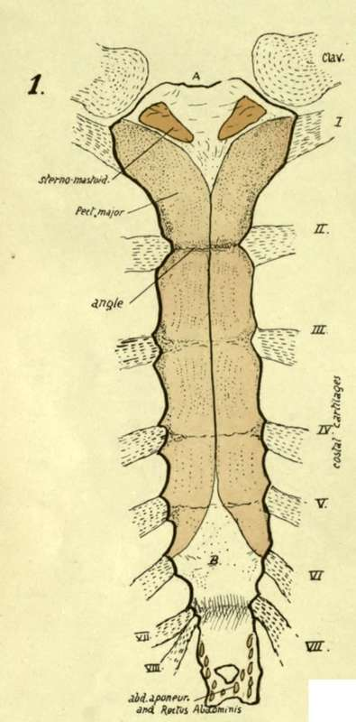
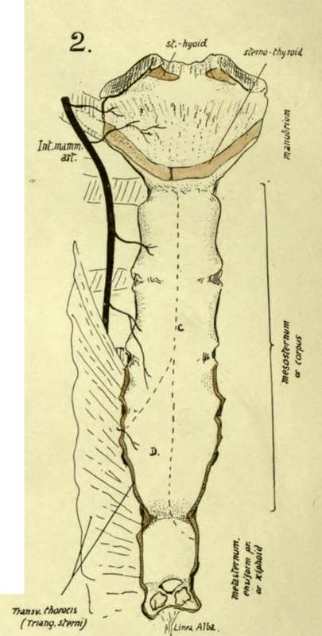

Costal Cartilages. Part 6
Description
This section is from the book "The Anatomy Of The Human Skeleton", by J. Ernest Frazer. Also available from Amazon: The anatomy of the human skeleton.
Costal Cartilages. Part 6
The inner surface of the last rib looks in an upward and inward direction in its whole extent, particularly at its vertebral end : if this is borne in mind the common mistake of placing the bone on the wrong side of the body will not be made. Its lower margin is sharper than the upper border and has the costo-lumbar ligamentous bands inserted into it : Quadratus lumborum is in front of this plane, so its insertion into the bone is along the lower part of its front or inner surface, where it has a marking on the bone. The marking is due to the presence of aponeurotic fibres in the muscle where it lies behind the Diaphragm, and to the anterior lamella of aponeurotic fascia covering it in front. The Internal Intercostal also encroaches somewhat on this surface near the top border, but with these exceptions the surface is pleural (see Fig. 35).
But this simple arrangement of the structures about the last rib does not always hold, and bones are frequently met with which show by their markings that additional relations were present with them. Such a bone is shown in Fig. 45, and a sketch of a dissection is given above it which represents a condition that was also probably present in the body from which the bone was taken.
In the dissection the Quadratus lumborum is seen to give a stout aponeurotic sheet (X) (in front of the last dorsal nerve (N) ), which passes up in front of the bone to reach the interrupted line above A in the middle figure. This sheet is covered in the dissection by thin aponeurotic sub-costal fibres running inwards and downwards to the side of the vertebral column, so that the inner end of the bone is covered by these two layers of aponeurosis in front. Thus we can recognise, on the front of the bone, the muscular areas for Intercostal and Quadratus lumborum muscles, and an area A covered by aponeurosis passing to the ridge that bounds it above, with a pleural area B.
On the back of the rib (lowest figure) the rough area D is for the scattered costo-transverse fibres, and the lower, E, for the costo-lumbar ligaments connecting it with the first lumbar transverse process. Outside these is a marking above for Levator costae, and, below this, irregular markings showing the insertion of mixed fibres of the Erector spinas mass. This area is bounded externally by secondary markings made by fibres of the definite Ilio-costalis and covering aponeurosis. Outside this is the area C, covered by Latissimus dorsi and giving origin to some of its fibres as well as to External Oblique and Serratus posticus inferior.
The middle or main lamella of the aponeurotic origin of Transversalis is fastened to the lower border of the rib and joins the deep aspect of the costo-lumbar ligaments.
Costal Cartilages
The costal arch or sub-costal angle is made by the lower six cartilages on each side. Occasionally the eighth, however, reaches the sternum on one or both sides, more frequently on the right. The increasing obliquity of the cartilages downwards only extends to the tenth : the last two not having indirect connection with the sternum are not turned up but are sharp-pointed tips embedded in the muscles of the body wall.
Interchondral and chondro-sternal articulations are secured by anterior and posterior accessory bands on the capsules of the joints : in the sternal joints these radiate on to the corresponding bony surfaces. The anterior bands are stronger. Synovial cavities are in all the interchondral and in most of the chondro-sternal joints except the first : double in the second and occasionally in the fourth and third. The connection with the ribs is by continuity of covering membrane and some amount of fixation between the cartilage and bone : a synovial cavity has been occasionally found in the first costo-chondral joint, but not in any of the others.
The cartilages increase in length from the first to the seventh and then decrease : their thickness is in general greater as they are followed upwards ; they become somewhat smaller as they approach the sternum.
The cartilages afford attachment above and below to the Internal Intercostal muscles and anterior intercostal membranes, which fill up the interchondral intervals.
The deep aspect of the true cartilages, from the second down, is covered by Triangularis sterni, which arises from them, and crossed by the internal mammary vessels : that of the first cartilage (and part of the second and third) is covered by pleura and crossed by the vessels. In the case of the seventh cartilage the vessels are the superior epigastric, and the outer part of the cartilage, outside the area of Triangularis, is, like the remaining cartilages, taken up (see Fig. 46) by the alternate origin of digitations of Diaphragm and Transversalis : these cartilages that form the costal arch are crossed on their inner side, between the digitations, by intercostal nerves and vessels from musculo-phrenic running into the abdominal wall.
The lower edges of the false cartilages, where these edges form the costal arch, receive the insertion of the upper fibres of the Internal Oblique, and where the cartilages are not joined, in the last two spaces, the fibres of this muscle become directly continuous with those of the Internal Intercostals.
The front surfaces of the true cartilages are covered by Pectoralis major, which also arises from them, with the occasional exception of the first and seventh. Outside and below the pectoral area, the Rectus abdominis covers and is attached to the fifth, sixth and seventh cartilages, and may even extend higher : thus its upper part may come under cover of the pectoral muscle, which gains some origin from its sheath.
In this position the Rectus hes immediately on the cartilage, but when it comes down over the costal arch it lies on the aponeurosis of Internal Oblique inserted into the border of the arch, and this aponeurosis separates it from muscular fibres of Transversalis arising from the deep aspects of the cartilages.
Outside the part covered by Rectus the cartilages of the false ribs are covered by External Obhque, but do not give origin to any of its fibres (see Fig. 39).
The first costal cartilage requires some further notice. Its upper surface has an articular surface for the clavicle, on the inner margin of which the inter-articular fibro-cartilage is attached. Outside and rather behind the joint is the rhomboid ligament : in front of this the cartilage is covered by Pectoralis major and, deep to this muscle, gives part origin to Subclavius. The subclavian vein lies behind the ligament and is an upper and back relation of the cartilage to a small extent, and it is below the vein that the pleura and internal mammary artery come against the cartilage. The Sterno-thyroid muscle arises from the inner end of the cartilage (see Fig. 47), so that this part has no pleura in relation with it, and the deep layer of the omohyoid fascia passes down the rhomboid ligament to enclose the muscle, carrying down the layer of scalene fascia that covers the vein, so that both these are attached to the inner part of the cartilage below the Sternothyroid.
Fig. 47.-Sternum : 1, Anterior ; 2, Posterior aspect. A, jugular notch and attachment of interclavicular ligament, li, area covered by interlacing fibres (tendinous) continuous with Pect. major, and thus somewhat roughened. Posterior surface below manubrium is covered by thick fibrous tissue, on which C indicates lines of pleural reflection, and D the area in relation with pericardium, where the left pleura passes away from the middle line. The costal cartilages are shown in their places ; on the right the eighth reaches the sternum, an occasional occurrence.
Development
Ribs are laid down in cartilage : chondrification appears in the blastemal costal processes of the vertebrae (that extend ventrally into the body wall) and is not continuous with the cartilage of the vertebrae, but connected with it by the continuous blastema.
The ends of the cartilaginous ribs are connected by the sternal plate of that side and the ribs only extend at first partly round the body : the sternal plates have partly met and fused in the middle hne when ossification begins in the ribs.
Bony centres appear near the angles : first in the middle ribs, in the eighth week, and other ribs rapidly following, that for the first usually appearing before that for the twelfth. Ossification extends in both directions in each rib. At birth the head, tubercle, and part of neck are cartilaginous (see Fig. 8). At puberty epiphysial centres appear for (i) the head and crista, (2) the articular, and (3) the non-articular tubercle : these all join the main bone after twenty, the head epiphysis joining last- about twenty-four.
The ribs below the sixth do not have a non-articular tubercular epiphysis, and the last two bones have no tubercular epiphysis at all.
Continue to: